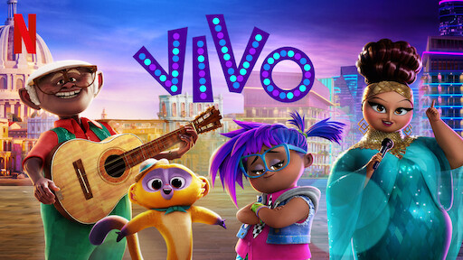
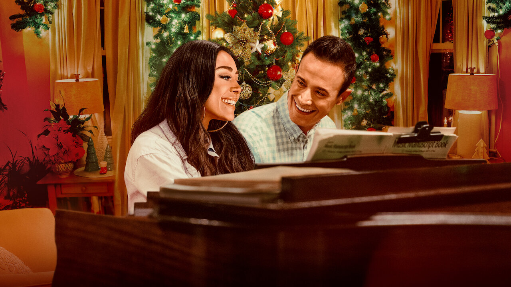

I collaborated directly with Netflix’s product services team to write copy for their sizzle video & campaign celebrating Hispanic Heritage Month. This was featured directly on the Netflix streaming service landing page.

Creative Marketing Writer, "Vivo" (Netflix)
I worked directly with Netflix’s stakeholder teams where I created & pitched a package of marketing content, wrote copy for the on-service product, created memes to promote the film, and designed visual assets for social platforms. As a Cuban-American, I provided feedback and some cultural authenticity into the marketing campaign of this family film.

Copywriter, "Christmas With You" (Netflix)
For Netflix’s holiday rom-com featuring Aimee Garcia and Freddie Prinze Jr., I wrote copy and taglines for the trailer and key art.
Creative Marketing Writer, "Nightbooks" and "Cheer" Season Two (Netflix)
In a continued role after my work on "Vivo," I created & pitched packages of marketing content for "Nightbooks" and season two of "Cheer." Linked above are two talent shoots that I worked on.
Editor & Producer, "Introduction to HomeLister" (HomeLister)
I edited and produced this marketing ad for HomeLister.